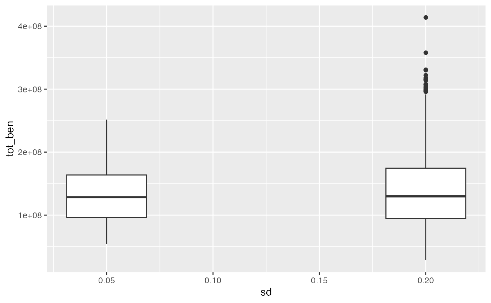
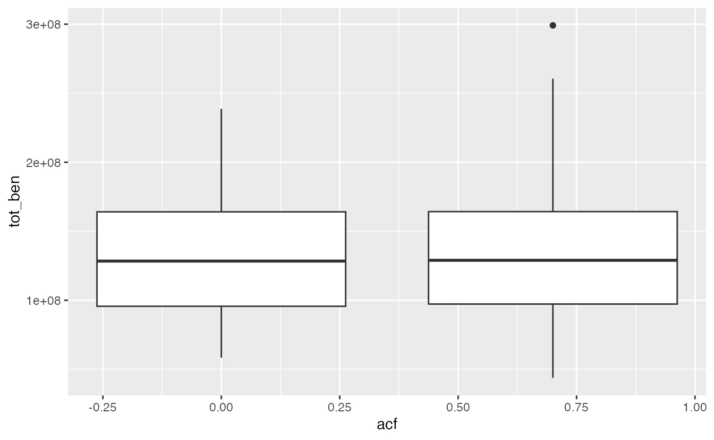

a01_basic_examples.RmdWe will simulate a low and high variance scenario, calculate net benefits for each simulation and plot results.
df_lo = sim(rec_std = 0.05)
df_hi = sim(rec_std = 0.2)
# summarize total benefits
df_lo_summary = mutate(df_lo,
net_ben = discount*net_benefits) %>%
group_by(sim) %>%
summarise(tot_ben = sum(net_ben))
df_hi_summary = mutate(df_hi,
net_ben = discount*net_benefits) %>%
group_by(sim) %>%
summarise(tot_ben = sum(net_ben))
df_lo_summary$sd = 0.05
df_hi_summary$sd = 0.2
ggplot(rbind(df_lo_summary,df_hi_summary), aes(sd, tot_ben,group=sd)) +
geom_boxplot()
Each simulation in a particular run uses the same set of random number seeds to model environmental variation, etc. We can control for this random variability by comparing the pairwise simulations (e.g. simulation # 1 from the low recruitment run to simulation # 1 from the high recruitment run) and calculate the distribution of differences across simulations.
Using the example above, df_lo_summary and
df_hi_summary contain the total benefits for each
simulation.
df_diff <- data.frame(y = df_hi_summary$tot_ben - df_lo_summary$tot_ben)
ggplot(df_diff, aes(y)) +
geom_histogram()
#> `stat_bin()` using `bins = 30`. Pick better value with `binwidth`.
m <- dplyr::summarise(df_diff,
mean = mean(y),
median = median(y),
lo25 = quantile(y, 0.25),
hi25 = quantile(y, 0.75),
lo_95 = quantile(y, 0.025),
hi_95 = quantile(y, 0.975))
knitr::kable(m, caption = "Summary statistics on differences")| mean | median | lo25 | hi25 | lo_95 | hi_95 |
|---|---|---|---|---|---|
| 7829584 | 4525569 | -21610661 | 31675838 | -70155579 | 104092134 |
Similar to above, we can compare a white noise to autocorrelated scenario,
df_lo = sim(rec_acf = 0)
df_hi = sim(rec_acf = 0.7)
# summarize
df_lo_summary = mutate(df_lo,
net_ben = discount*net_benefits) %>%
group_by(sim) %>%
summarise(tot_ben = sum(net_ben))
df_hi_summary = mutate(df_hi,
net_ben = discount*net_benefits) %>%
group_by(sim) %>%
summarise(tot_ben = sum(net_ben))
df_lo_summary$acf = 0
df_hi_summary$acf = 0.7
ggplot(rbind(df_lo_summary,df_hi_summary), aes(acf, tot_ben,group=acf)) +
geom_boxplot()
We can introduce variability in realized harvest by specifying the
harvest_CV parameter, which is a lognormal variable
multiplied by expected harvest. Realistic values are probably in the 0.5
- 1.0 range.
sim(harvest_CV = 0.5)Instead of the defaults, we can create a dataframe with custom
parameters and pass these in. The default parameters can be found using
the get_ricker() function,
pars <- get_ricker()But let’s change the Ricker \(a\) and \(b\) parameters. We have a custom
These can be passed into the simulation now
custom_sims <- sim(ricker_pars = pars)